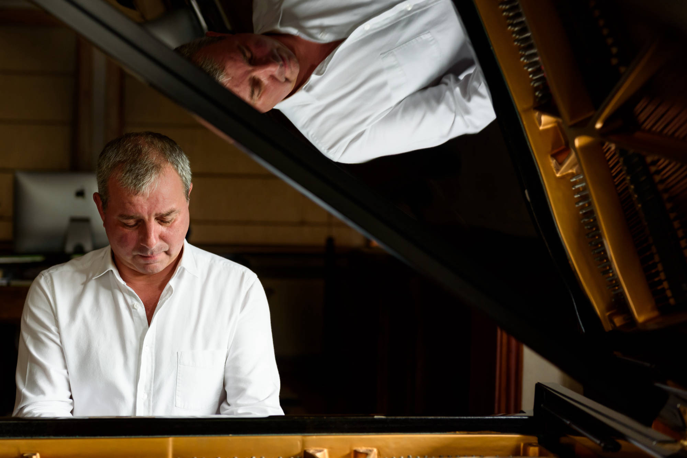
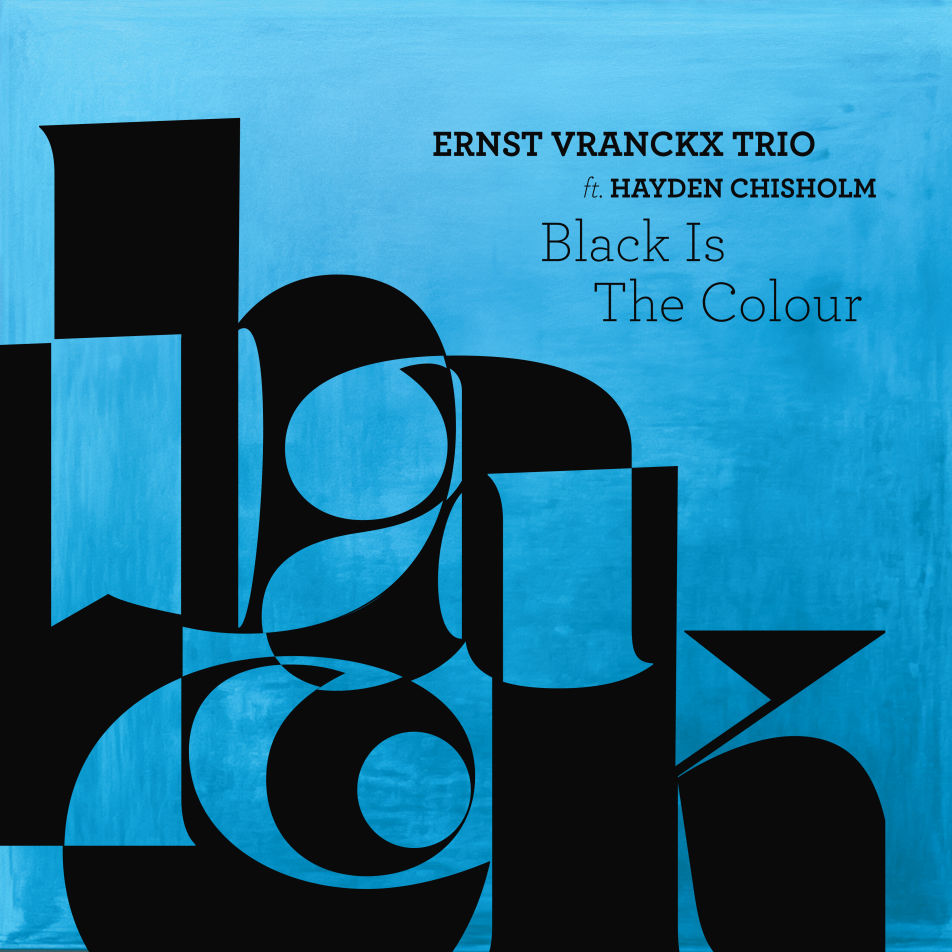
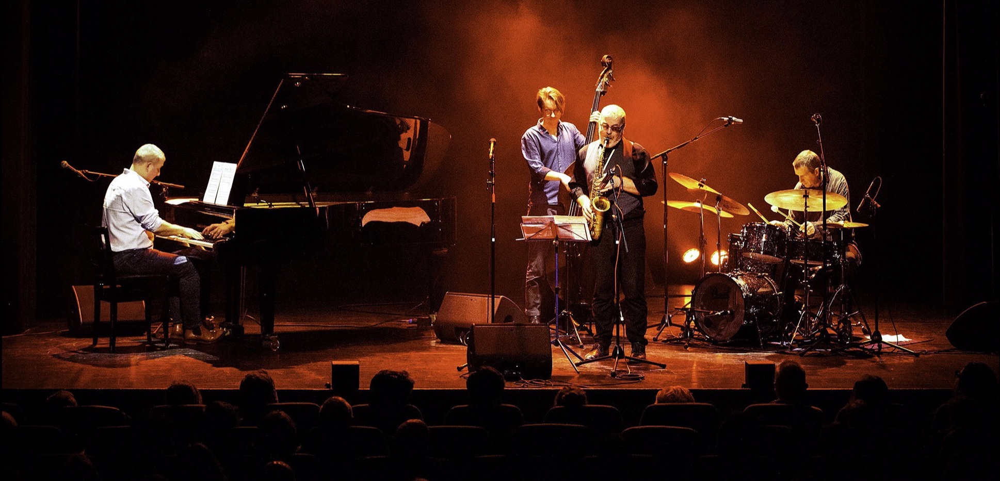

2024
Black Is The Colour
Trio ft. Hayden Chisholm
Eden River · ERR-CD-25

“Er zijn weinig goede componisten. Ernst is één van de goede. Ik hou van zijn songs, ze vertellen me iets.” Kenny Wheeler — De Standaard

Nieuwste albumBlack Is The Colour
Afrekenen via PayPal · verzendkosten zie je vóór je betaalt.
Opgenomen in mei 2022 in de Riverside Studio’s in Keulen. Een integer coloriet van cooljazz — fris en bezield — met de Nieuw-Zeelandse saxofonist Hayden Chisholm als gast en crooner.
Afrekenen via PayPal · verzendkosten zie je vóór je betaalt.

Ernst Vranckx, geboren te Leuven op 3 april 1966, begint zijn muzikale carrière eind jaren ’80. Zijn muziek wordt omschreven als European Cool met etnische en klassieke invloeden — een blend die ver buiten de grenzen weerklank vindt.
Na zijn werk met de Chris Joris Experience volgt een samenwerking met trompettist Kenny Wheeler, met het album “A Child’s Blessing” voor W.E.R.F. als resultaat. Doorheen de jaren speelde hij concerten, festivals, radio- en tv-sessies in heel Europa, Zuidelijk Afrika en China.
Sinds 2015 werkt hij samen met de Duitse producer Ralf Kemper (Alan Broadbent, Arturo Sandoval, Jimmy Scott) voor het label Eden River Records.
Speel op de toetsen, of gebruik ← → op het klavier om door zijn carrière te wandelen.
Van het lyrische Aquarelle tot het intieme Black Is The Colour — beluister elk album of bestel de cd rechtstreeks bij Ernst.
Trio ft. Hayden Chisholm

Trio met Paul G. Ulrich & Kris Duerinckx

Ernst Vranckx Quintet

Quartet feat. Kenny Wheeler

met Stefan Bracaval
“Refined playing, interesting choice of compositions, a sense of space and economy when needed, intimate atmospheres… a delicate, sometimes fragile but touching music, always rich, inspired and with great harmonic sense. Nice storytelling!”
Michel Herr · 2024“Hoe meer we de plaat laten rijpen, hoe minder het ons verbaast dat Ernst Vranckx zo goed als elk continent heeft weten verblijden met zijn muziek.”
“Les thèmes évanescents du Flandrien qui peint des brumes à la Turner.”
“Vranckx lijkt mij een volbloed romanticus, wiens soms opvallend sterke composities vast ook in de smaak zouden vallen bij Manfred Eicher van ECM.”

Clubs, cultuurcentra en festivals — in België en daarbuiten. Ernst speelde al in heel Europa, Zuidelijk Afrika en China.